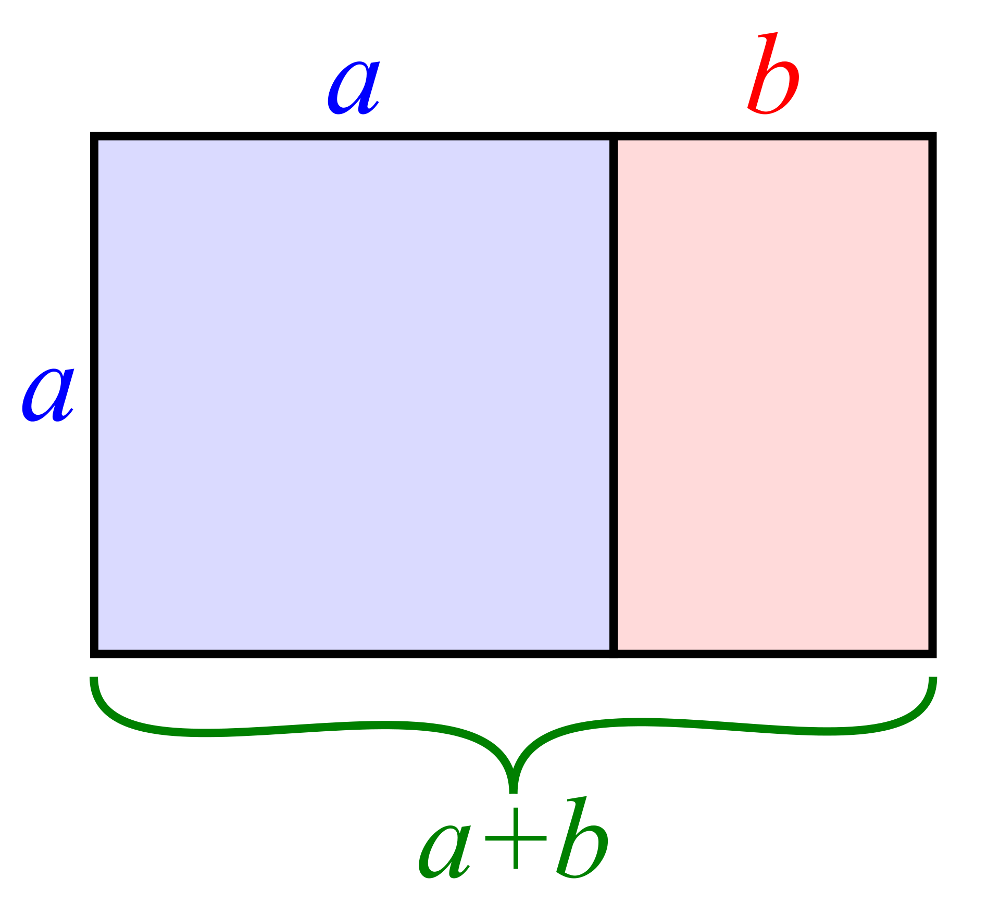
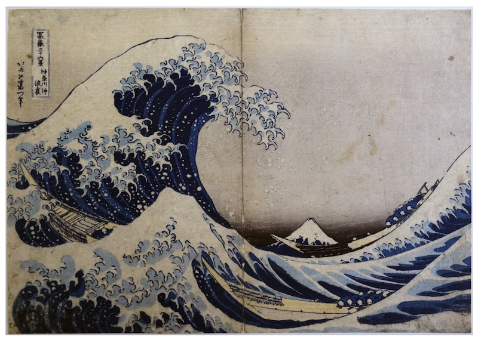
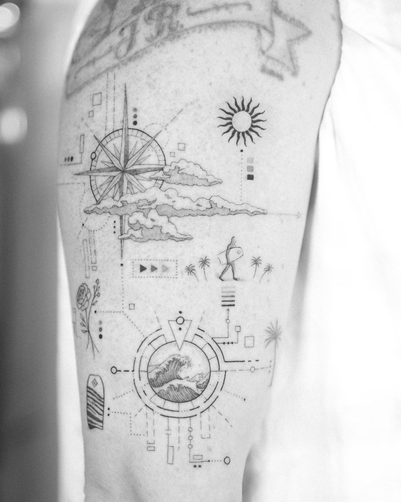
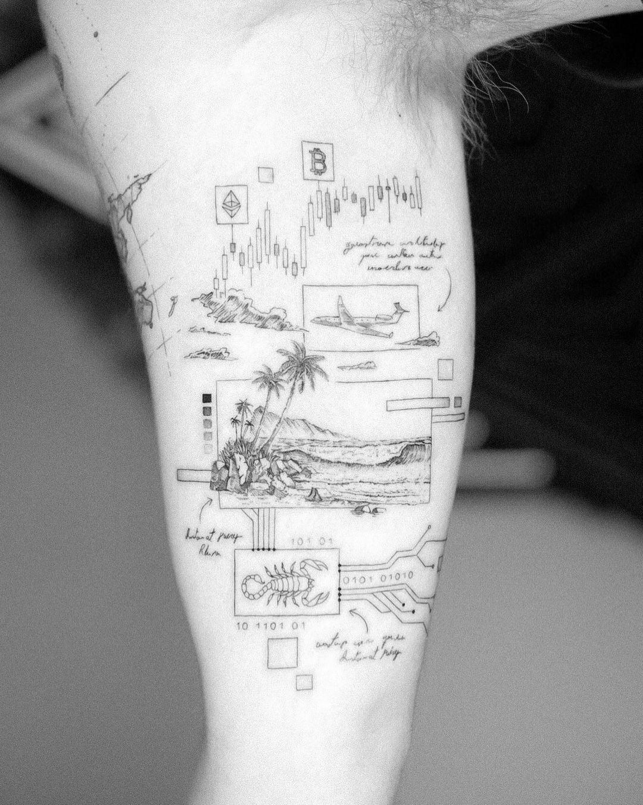
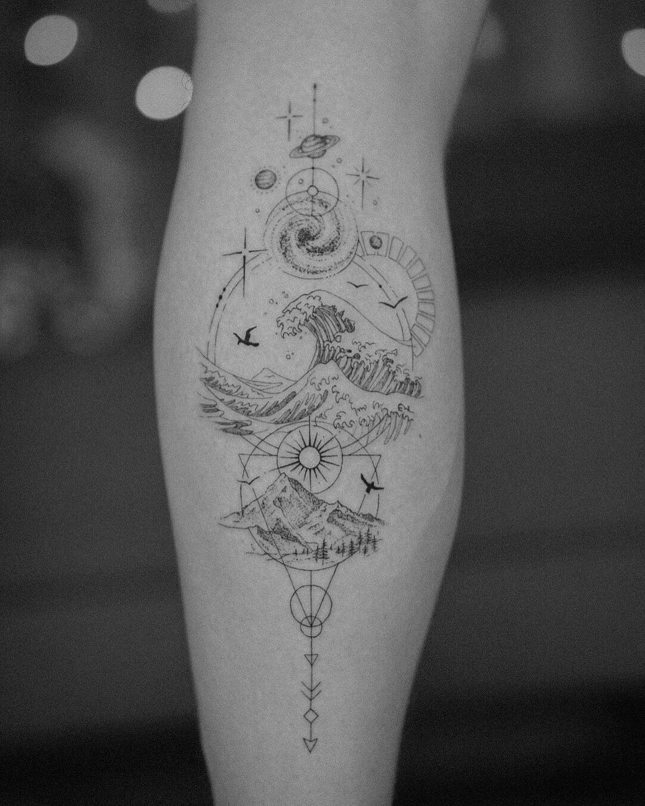
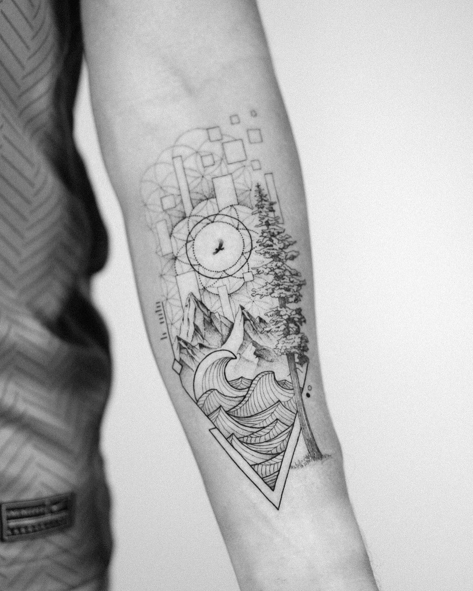
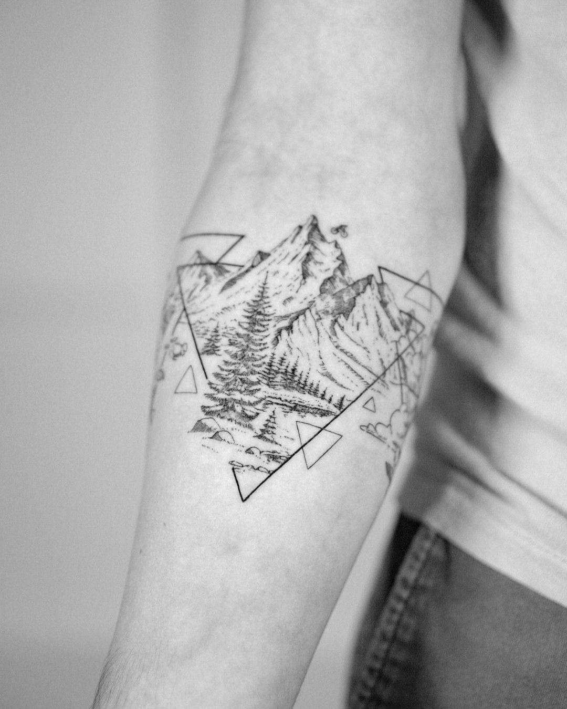
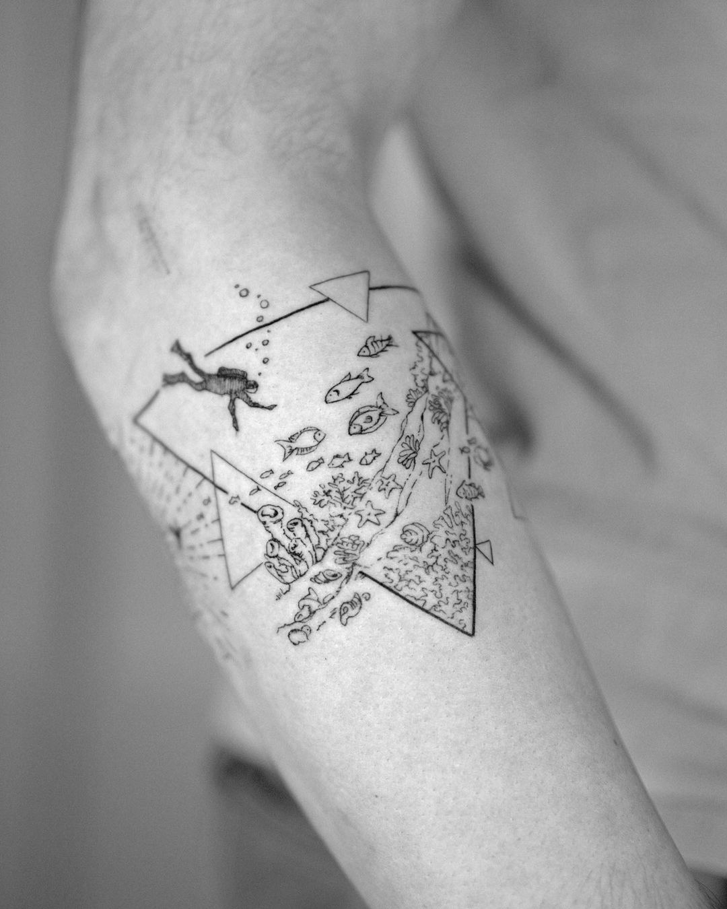
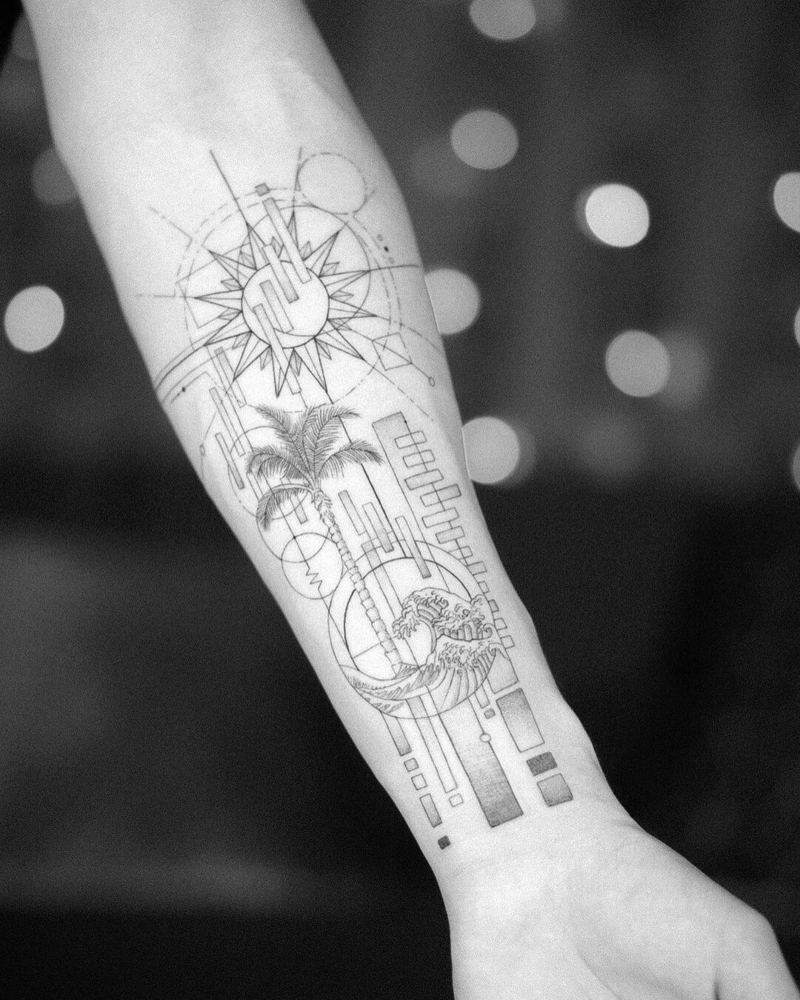
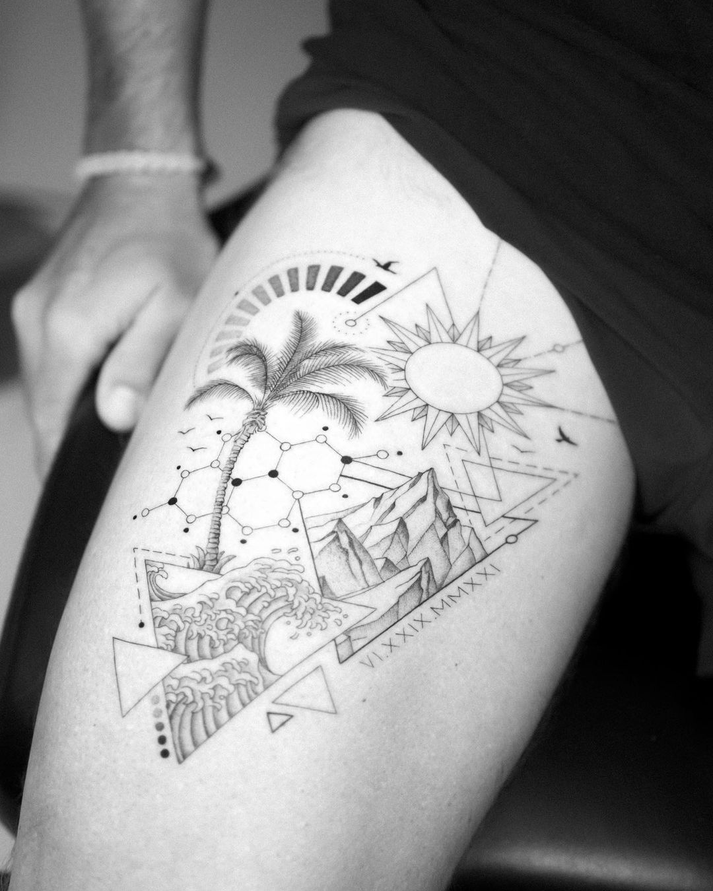

Tattoo inspiration
fine line, geometric, phi, golden ratio, movement, water, air, mountains, sun, running, scuba, swimming
In my younger years, I served in the Navy as a CTI (Cryptologic Technician Interpretive). This is what that rating looks like:
It's a crossed quill with a lightning bolt. These are the platforms that I worked and lived on:
- HMNZS Te Kaha (F77)
- USS John Paul Jones (DDG-53)
- USS John S. McCain (DDG-56)
- USS Elliot (DD-967)
- USS Pittsburgh (SSN-720)
- USS Shiloh (CG-67)
I currently write software for a living, and have been working with Python all of my professional career. It gets a lot of flack from people for various reasons, but it turned my life around, and got me out of a dead-end job and really just opened up the future to me. It's also helped several of my friends and family in the same way, so it holds a special place in my heart. Thanks, Guido (inventor of Python).
I think the concept of the golden ratio

and phi
that are found all throughout life is fascinating. I think working in the ratio alongside nature scenes is the predominant theme I want.
I've always loved "The Great Wave off Kanagawa":

I turned to Chat GPT to see what it could do, so I gave it this prompt and a few images I liked:
so i like these fine lines, water elements, and air, and mountains, and just overall an aesthetically minimalistic clean design. what's this style called? i also really like the golden ratio and the mathematical concept of phi, so if that can be incorporated as well, bonus.and it responded:
The tattoo designs you've uploaded showcase a style that is often referred to as "fine line geometric" tattoos. This style is characterized by precise and delicate lines that form geometric shapes, patterns, and various natural elements like mountains, waves, and fauna. It often includes symbolic elements and can have a sense of mysticism or spiritual significance. Incorporating the golden ratio and the mathematical concept of phi, which are often associated with beauty and harmony in design, would fit well with the style of these tattoos. An original idea might be to create a composition that features elements of nature like water and mountains, framed within geometric shapes that follow the golden ratio. For instance, a spiral (reminiscent of the Fibonacci sequence) could lead into a scene with mountains, while waves could form a proportionate pattern below, suggesting balance and flow. To commission a design, you'd want to discuss these elements with your chosen tattoo artist, who could create a custom piece that respects the original artist's style while being unique to you. If you'd like, I can generate a visual concept that you might use as inspiration when speaking with your tattoo artist. Would you like me to create that for you?and i said yep, and it spit this out:
 ...which I thought was actually pretty cool.
...which I thought was actually pretty cool.
These are all by waz.art, and they are all amazing. He doesn't know it yet, but he's going to give me my first tattoo.







